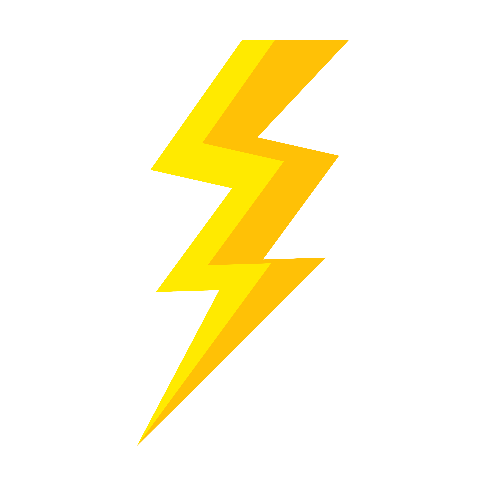

<header class="header">
    <div class="wrapper">
        <div class="sidebar">
            <a href="#">
                
            </a>
            <ul>
                <li>
                    <a style="text-decoration: none" routerLink="/createGame"><i class="fas fa-blog"></i>Créer une partie</a>
                </li>
                <li>
                    <a style="text-decoration: none" routerLink="/game/462778813468"><i class="fas fa-address-book"></i>Rejoindre une partie</a>
                </li>
                <li>
                    <a style="text-decoration: none" routerLink="/admin"><i class="fas fa-map-pin"></i>Administrer les jeux</a>
                </li>
            </ul>
        </div>
    </div>
</header>
